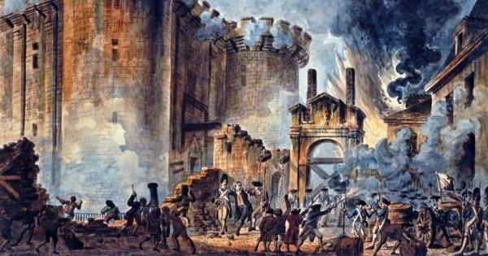

A Revolução Francesa é o nome dado ao ciclo revolucionário que aconteceu na França entre 1789 e 1799 que marcou o fim do absolutismo nesse país. Essa revolução, além de seu caráter burguês, teve uma grande participação popular e atingiu um alto grau de radicalismo, uma vez que a situação do povo francês era precária em virtude da crise que o país enfrentava. A Revolução Francesa foi um marco na história da humanidade, porque inaugurou um processo que levou à universalização dos direitos sociais e das liberdades individuais a partir da Declaração dos Direitos do Homem e do Cidadão. Essa revolução também abriu caminho para a consolidação de um sistema republicano pautado pela representatividade popular, hoje chamado de democracia representativa. A Revolução Francesa só foi possível graças à popularização dos ideais do Iluminismo.
A Revolução Francesa foi resultado da crise política, econômica e social que a França enfrentou no final do século XVIII. Essa crise marcou o fim da monarquia absolutista que existia na França há séculos e da antiga ordem de privilégios que constituía o Antigo Regime Francês. Nessa época, a França era governada por Luiz XVI, e a sociedade era dividida em classes sociais, conhecidas como Estados: